La banda despeñaba los vehículos que robaba para perpetrar sus delitos.
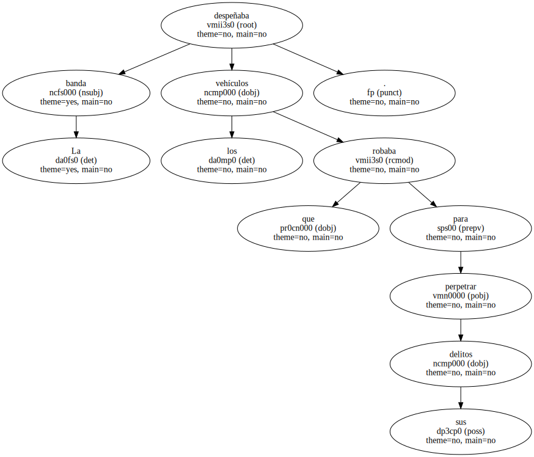La policía ha detenido a tres personas , con antecedentes por robos y atracos , que sustraían vehículos para cometer sus fechorías y que después los quemaban o despeñaban por un barranco del barrio barcelonés del Carmel para destruirlos.
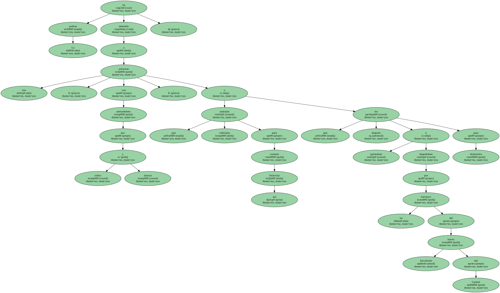Los detenidos son Francisco E. B. , de 29 años ; Manuel L. L. , de 20 , y Francisco P. G. , de 21.
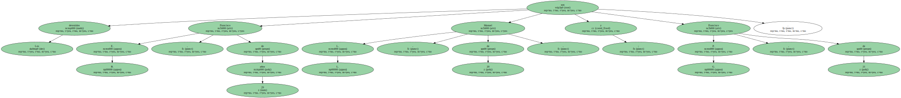Los tres delincuentes despeñaban por el barranco de Els Tres Turons los coches robados.
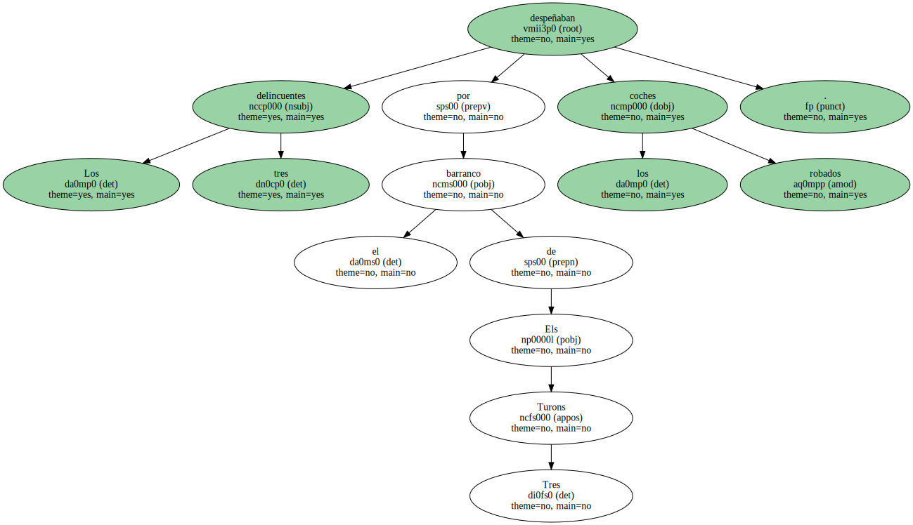Inspectores de la comisaría de Horta tuvieron que emplearse a fondo para lograr la detención de los tres delincuentes , que tienen su domicilio en el propio distrito de Horta-Guinardó.
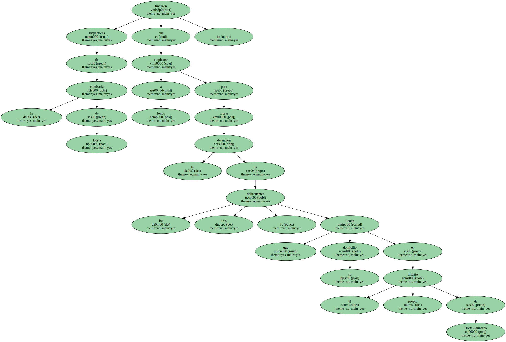Según la versión policial , ofrecieron una gran resistencia e , incluso , trataron de atropellar a los policías que les cercaban.
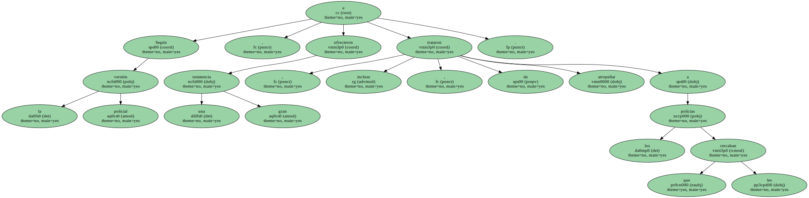Las mismas fuentes subrayaron que se trata de tres personas muy conocidas en el barrio por sus actos delictivos desde su más temprana juventud.
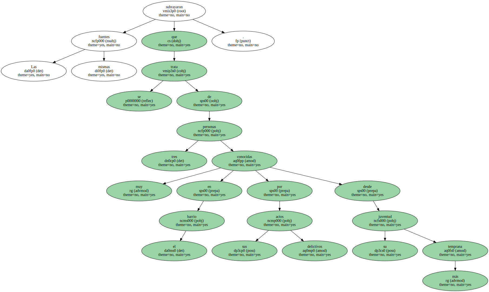La detención se produjo en las proximidades del parque conocido como de Los Tres Turons , que se encuentra situado entre el Carmel y Horta.

Es un lugar escarpado y solitario , en el que se han registrado otros hechos conflictivos.
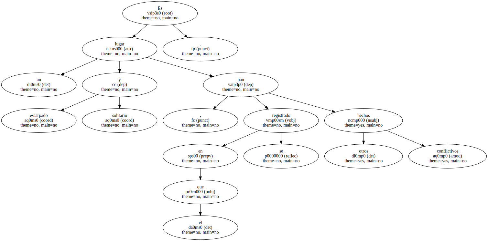Los vecinos se han quejado en varias ocasiones de que el lugar era frecuentado por delincuentes , en su mayoría jóvenes de la propia barriada.
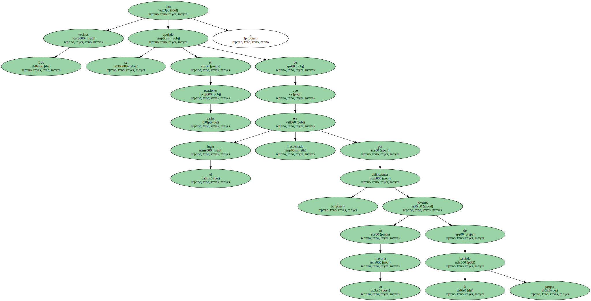Se trata del mismo barranco por donde los detenidos arrojaban los vehículos sustraídos a particulares.

Los robos solían registrarse en otros lugares de Barcelona , distribuidos por toda la ciudad.
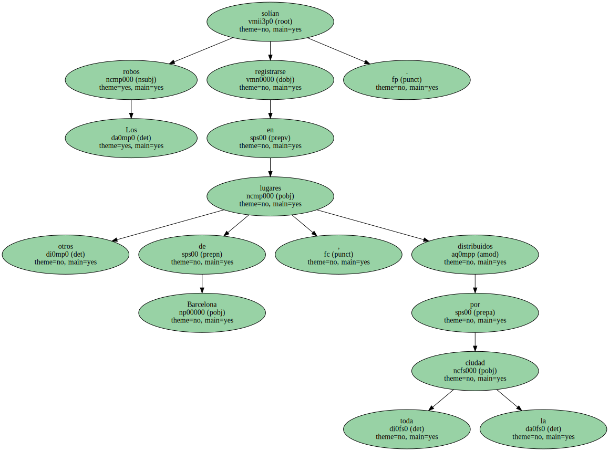Tras varios días de espera policial en el parque de Los Tres Turons , aparecieron los delincuentes con uno de los automóviles denunciados.
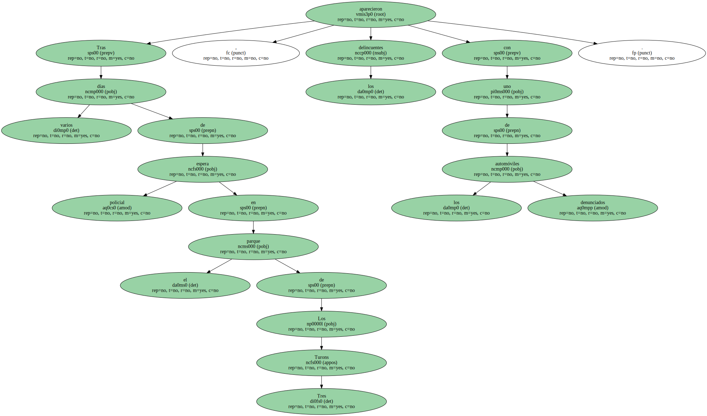Incremento de robos.
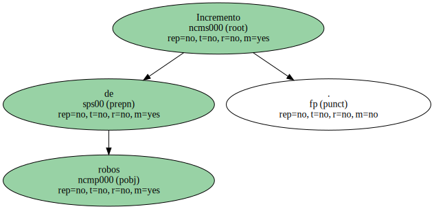La policía inició la investigación hace pocas semanas , tras detectar un importante incremento de las denuncias por robos de vehículos.
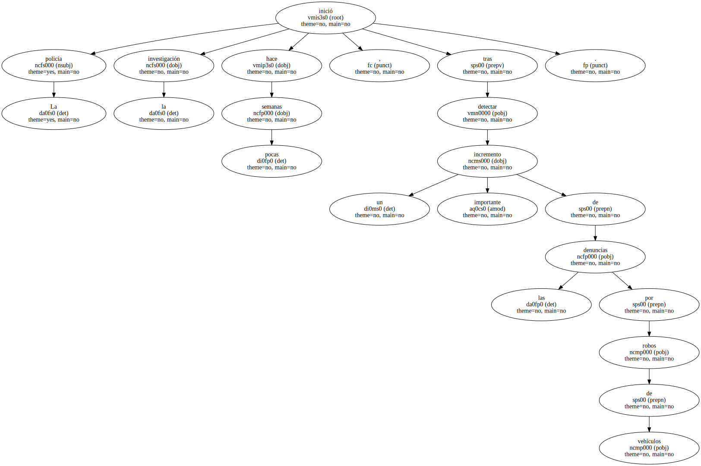La policía ha recuperado la chatarra de 16 coches , todos de modelos distintos.
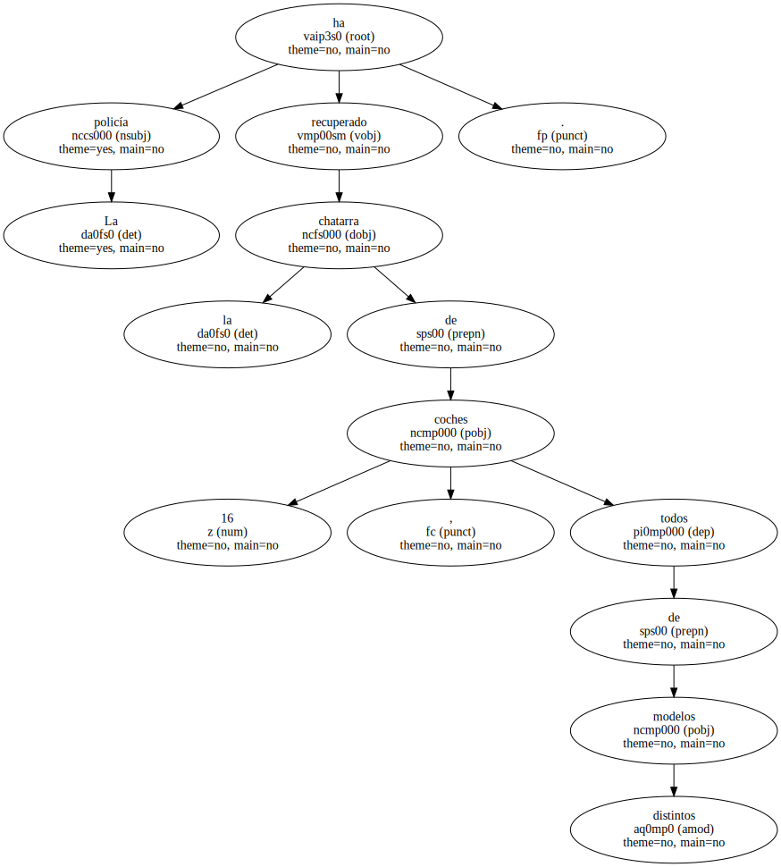En el fondo del barranco de Los Tres Turons , la policía recuperó un vehículo en cuyo interior había una potente motocicleta.
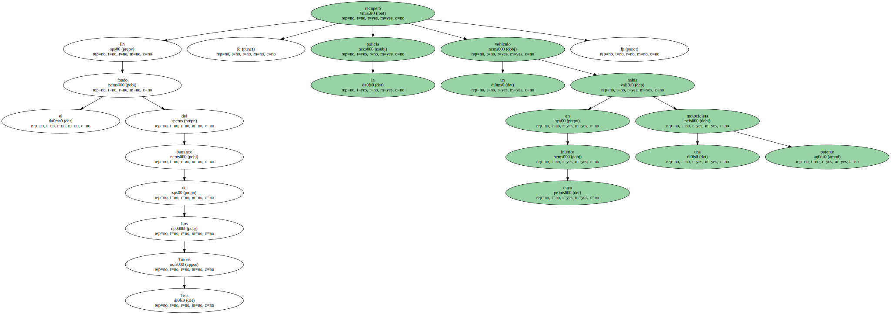La policía acusa a los jóvenes detenidos de otras 10 sustracciones de coches , dos motocicletas y tres ciclomotores.
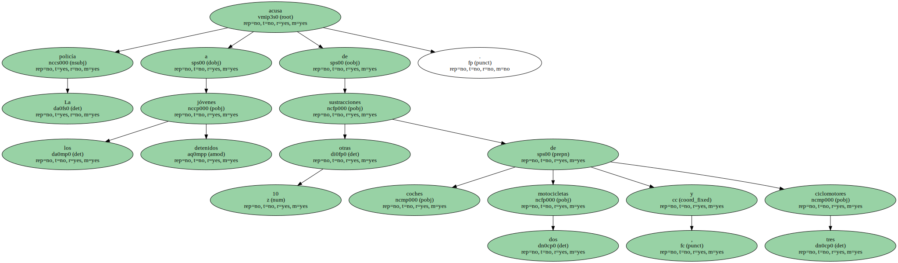La investigación sigue abierta , por lo que no se descarta su participación en la desaparición de más vehículos , así como en otros hechos delictivos pendientes de esclarecer.
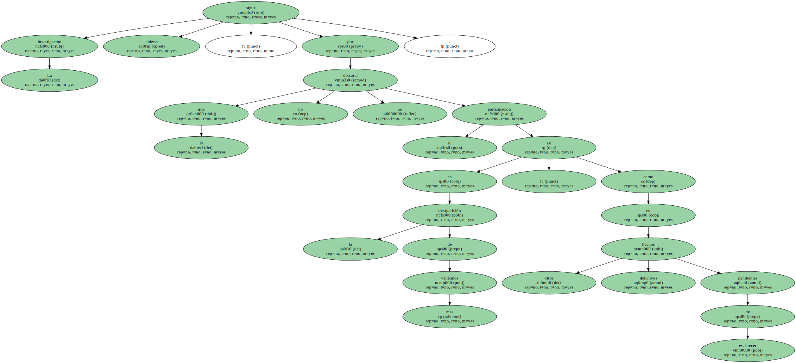A los detenidos también se les imputan algunos incendios de coches estacionados en la vía pública.
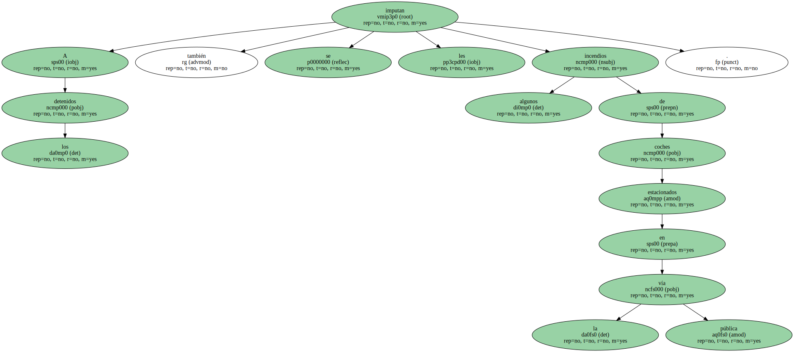La policía tiene constancia de que , al menos en una ocasión , los tres atracadores prendieron fuego al vehículo empleado para perpetrar sus robos y que las llamas se propagaron a otros coches aparcados.
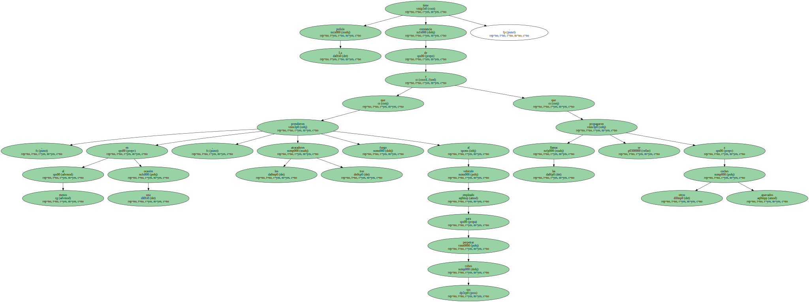Los tres jóvenes han pasado a disposición judicial con las pruebas recogidas en Los Tres Turons y el testimonio de las víctimas.
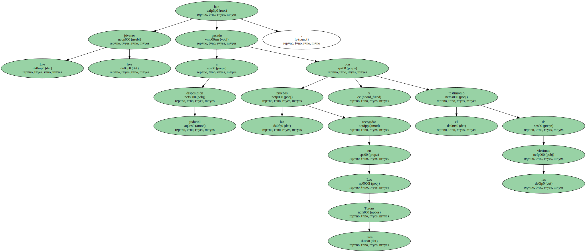